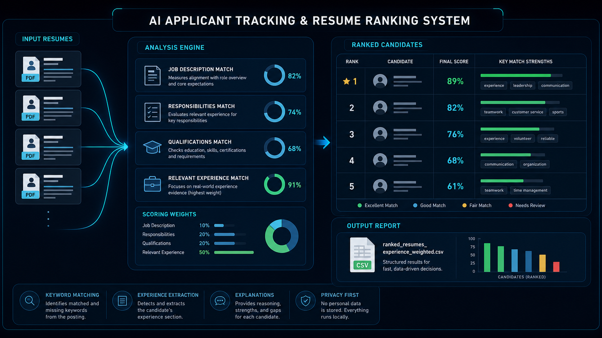

AI Applicant Tracker
A Python-based ATS system that ranks PDF resumes against role requirements, responsibilities, qualifications, and relevant experience evidence.
Python / Resume Ranking
Overview
The system reviews batches of PDF resumes and produces a ranked CSV so hiring staff can start with the strongest matches while still keeping final decisions human-led.
Technical Focus
The pipeline uses PyMuPDF for PDF extraction, NLTK stopword filtering, TF-IDF vectorization, cosine similarity scoring, and Pandas for structured report output.
Scoring Logic
- Compares resumes against job description, responsibilities, and qualifications.
- Weights relevant experience highest to reduce simple keyword stuffing.
- Reports matched keywords, missing keywords, strengths, gaps, and ranking reasons.
Repository
The public repository includes the resume reviewer script and README documentation for installing dependencies, setting the resume folder path, and exporting ranked results.